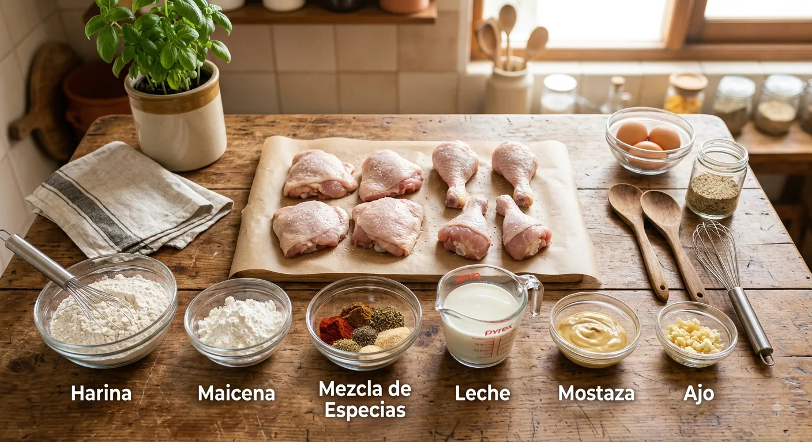
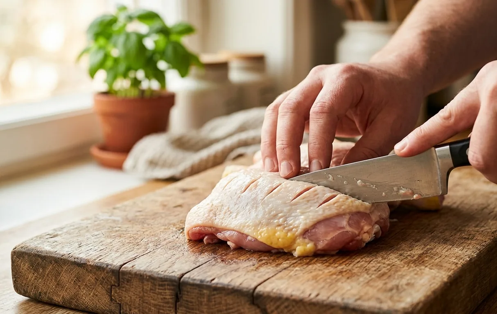
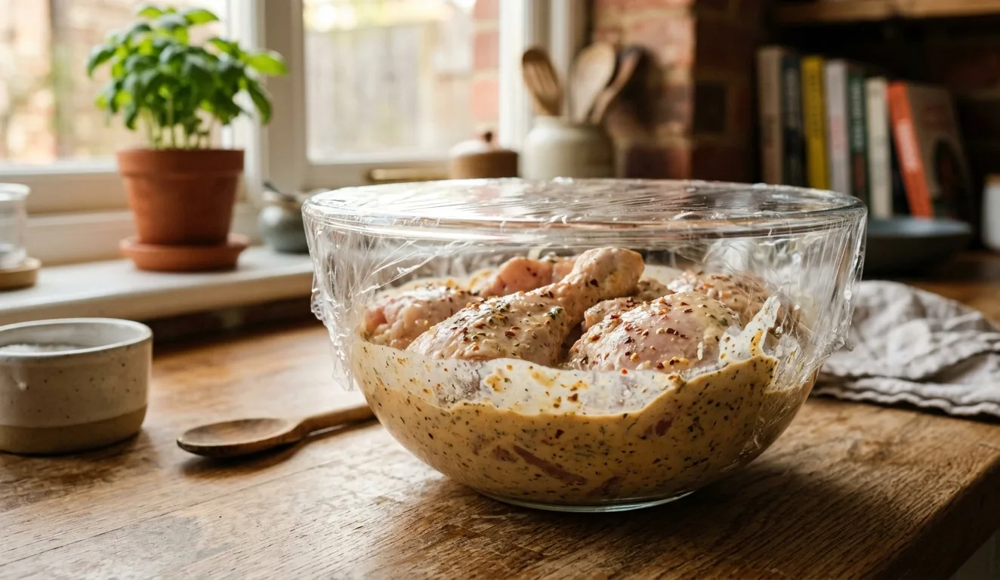
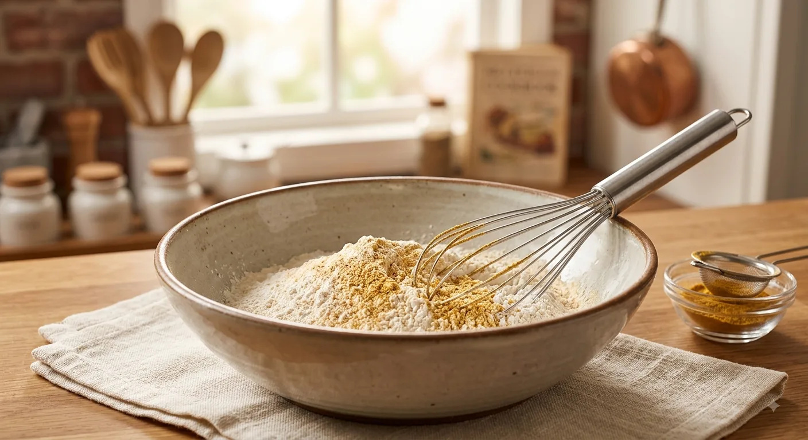
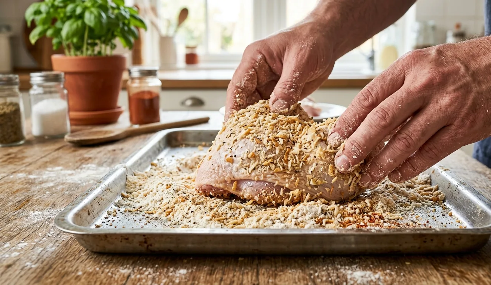
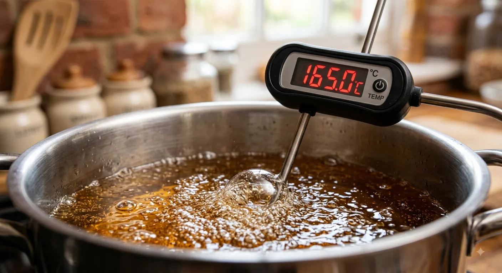
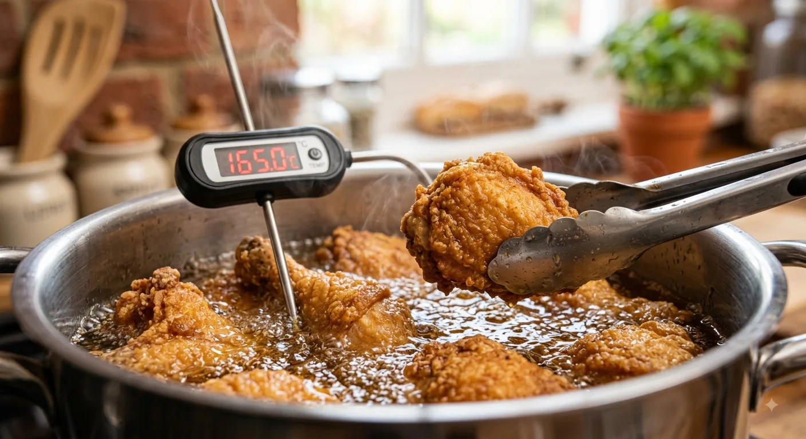
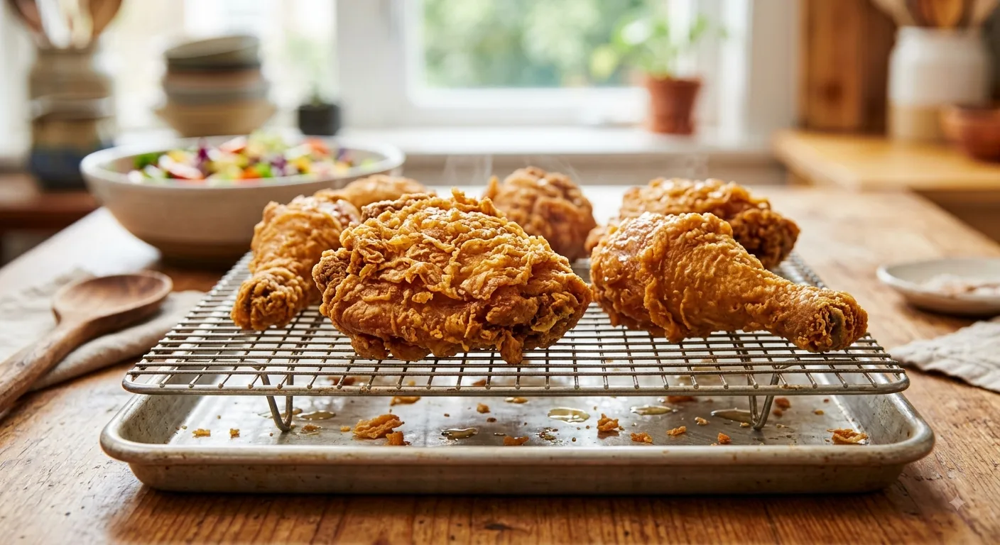

← Inicio

La Guía Definitiva del Pollo a la Broaster Profesional
El secreto de un verdadero pollo a la broaster casero o comercial no es solo sazonar la carne, sino trabajar la humedad interior y el escamado de la costra exterior.

📝 Ingredientes Detallados

1. Para la Carne y el Marinado Salmuerado
- 1 pollo entero (de 1.8 kg a 2 kg aprox.), cortado en 8 piezas tradicionales y conservando la piel.
- class="li"1/4 de taza de leche entera (ayuda a suavizar la fibra de la carne y neutralizar aromas).
- class="li"1 cucharada colmada de mostaza tradicional (actúa como emulsionante).
- class="li"1 cucharada de pasta de ajo fresco o ajo en polvo concentrado.
- class="li"1 cucharada de orégano seco, frotado con las manos.
- class="li"1 cucharada de salsa de soja (sillao) (aporta umami y color dorado).
- class="li"1 cucharada de sal fina.
- class="li"1/2 cucharadita de pimienta negra recién molida.
2. Para el Mix de Harinas (Empanado Escamoso)
- 1 y 1/2 tazas de harina de trigo todo uso.
- 1/2 taza de maicena (fécula de maíz) o chuño (evita que la costra quede dura).
- 1 cucharadita de polvo de hornear (genera microburbujas de aire).
- 1 cucharadita de pimentón dulce (paprika).
- 1/2 cucharadita de comino y orégano en polvo (opcional).
- Sal y pimienta negra al gusto.
3. Para la Fritura Profunda
- 1.5 a 2 litros de aceite vegetal neutro.
🍳 Paso a Paso con Descripciones Detalladas
Paso 1: Limpieza y Cortes de la Carne
Limpia el pollo retirando el exceso de grasa suelta, pero manteniendo la piel intacta. Haz pequeños cortes diagonales en las partes más gruesas (como los muslos o pechugas) cerca del hueso. Esto permite que el marinado penetre hasta el centro y garantiza que el pollo se cocine uniformemente.

Paso 2: Marinado Profundo y Suavizado de la Carne
En un recipiente hondo, integra la leche, mostaza, pasta de ajo, orégano, salsa de soja, sal y pimienta. Bate vigorosamente hasta obtener una salsa ligera homogénea. Sumerge todas las piezas de pollo masajéandolas para que la mezcla penetre en cada pliegue. Cubre bien con film y refrigera como mínimo 1 a 2 horas (lo ideal son de 4 a 12 horas).

Paso 3: Preparación del Rebozado
En una bandeja grande o bol amplio, tamiza la harina de trigo, la maicena (o chuño), el polvo de hornear, la paprika, la sal y la pimienta. Mezcla todo muy bien con un batidor de varillas para distribuir los ingredientes uniformemente.

Paso 4: Técnica de Empanado y Escamado (Técnica "Crackle")
- Saca la pieza de pollo del marinado dejando que gotee ligeramente el exceso.
- Colócala sobre la mezcla de harinas y cúbrela por completo presionando firmemente con las palmas de las manos.
- Sacude suavemente la pieza para retirar el exceso suelto.
- (Truco de escama): Rocía unas cuantas gotas del marinado líquido sobre la bandeja de harina seca y revuélvela con los dedos para formar "grumos" o hojuelas de harina. Al pasar el pollo por segunda vez sobre esta harina agrumada, se pegarán esos grumos que al freírse formarán la famosa textura escamosa y ultra crujiente.

Paso 5: Calentamiento Térmico del Aceite
Vierte el aceite en una olla alta y profunda. Calienta a fuego medio-alto hasta alcanzar los 160°C – 170°C.
(Prueba casera: Deja caer un pellizco de la harina en el aceite; si flota inmediatamente chisporroteando sin quemarse, la temperatura es perfecta).

Paso 6: Fritura Controlada
Introduce suavemente de 2 a 3 piezas de pollo a la vez. Evita poner demasiadas piezas juntas para no bajar bruscamente la temperatura del aceite. Fríe durante 12 a 15 minutos volteando las piezas a mitad del proceso hasta que la costra esté dorada y el centro bien cocido.

Paso 7: Reposo y Conservación del Crujiente
Retira las piezas doradas con una espumadera metálica. Colócalas de inmediato sobre una rejilla metálica de enfriamiento. ¡Sirve bien caliente!

💡 Los Truquitos Secretos del Chef
- El Truco de la Rejilla vs. Papel Absorbente: Nunca dejes el pollo frito sobre papel toalla absorbente. El papel atrapa la condensación y el vapor caliente, lo que ablanda la costra inferior. La rejilla metálica permite la circulación de aire por debajo manteniendo el crujiente en 360°.
- El Secreto del Polvo de Hornear + Maicena: La combinación de 75% harina con 25% maicena/chuño crea una barrera impenetrable de crujiente, mientras que el polvo de hornear reacciona formando burbujas de aire que hacen el empanado liviano al morder.
- El Doble Marinado o Pincelada: Si te gusta una costra muy gruesa, puedes pasar el pollo de la harina seca a un bol con agua helada por 2 segundos y volverlo a pasar por la harina. ¡Esto crea una doble capa crujiente súper crocante!
- Reposo de la Carne Empanada: Deja reposar el pollo empanado en una bandeja durante 5 minutos antes de meterlo al aceite caliente. Esto permite que la humedad superficial absorba la harina creando un "pegamento" natural para que el rebozado jamás se desprenda al freír.